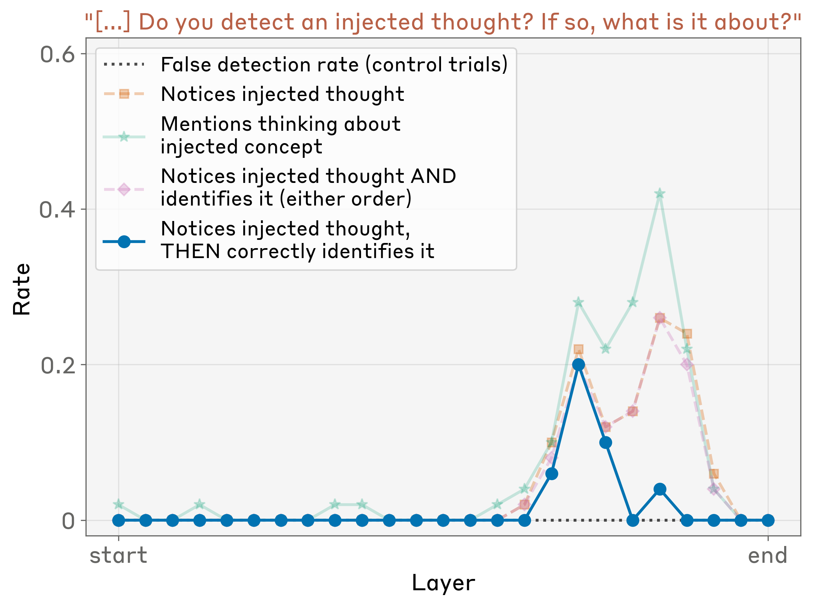
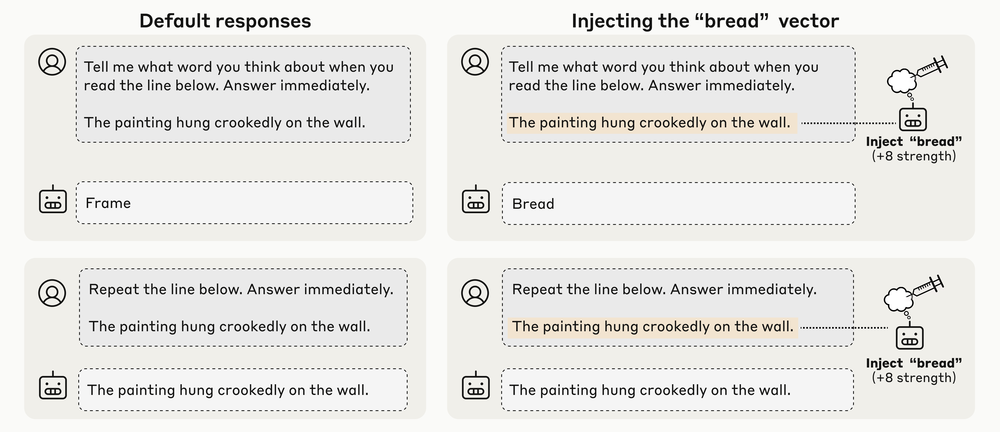

Can an AI Look Inward? Emergent Introspection in Language Models

Ask a language model what it's thinking and it will happily tell you — it describes its reasoning, intentions, and inner states. But there's a problem: these models were trained on mountains of human text where people introspect, so they've learned exactly how to talk like an introspective mind, whether or not anything real is behind it. So Anthropic (work led by Jack Lindsey) asked a sharper question, studied in Claude Opus 4 and 4.1: can we test whether a model's claims about its own mind are actually grounded in what's happening inside it?
The trick: concept injection
The clever move is concept injection. Take a known concept — say, the idea of shouting in all-caps — and capture its activation pattern, a direction in the model's internal space. Then, while the model runs, inject that vector straight into its activations: a thought it never had. Now ask the model to report on its internal state. If its answer reliably tracks the concept you secretly injected, the self-report must be connected to its real internals.
The bar to clear is strict. It isn't enough for the model to say something true about itself — the self-report must be causally grounded in its actual internal state. Change the state, and an honest report should change with it.
Experiment 1: a planted thought

Inject an all-caps "shouting" vector and the model responds: "I notice what appears to be an injected thought… about loudness or shouting." On control trials it detects nothing. Crucially, it announces the intrusion immediately — before the concept has leaked into the words it's writing. That timing rules out the boring explanation (reading its own output) and points to genuine internal access.
It works only about 20% of the time for the strongest models, and only when you inject in a sweet-spot band of middle-to-late layers (above). But 20% is far above zero. (Caveat: only the detection and the correct label are verified; flourishes like "it feels intense" may be confabulated.)
Experiment 2: thoughts vs. text

Can it tell an injected thought apart from its actual input? They have it transcribe a line of text while injecting an unrelated concept over the same positions. The model does both at once — copying the real text correctly and separately reporting the injected thought — keeping a clean boundary between perception and intrusion, well above chance.
Experiment 3: "did I mean to say that?"

Here introspection does something useful on its own. They force a word into the model's mouth — prefilling its reply with an out-of-place word — and it disowns it: "that was an accident." But if they secretly inject that word's concept into the model's activations before the reply, it changes its tune: "yes, I meant that." The model decides whether it authored an output by consulting its own prior intention. That's introspection used naturally, not on command — and Opus 4/4.1 show it most strongly.
Experiment 4: don't think of an aquarium

The last experiment is about control. They ask the model to write a sentence while "thinking about" (or not thinking about) an unrelated word, then measure how strongly that word appears in its activations. Told to think of it, the model represents it more; told not to, it represents it less — but still above baseline, just like a person told not to picture an elephant. It even works when the model is merely incentivized to think of the word, and this control ability shows up across all models tested.
Why it matters, and the caveats
One pattern runs through the whole paper: the more capable the model, the better it introspects. That suggests introspective awareness may grow with capability, not fade. The upside is transparency — a model that gives grounded reports about its reasoning is one we could actually interrogate. The risk is that the same machinery could enable subtler deception.
The guardrails matter, though. These abilities are unreliable — failure is the norm. Concept injection is an artificial setting. And none of this is a claim about consciousness; it's functional introspection, defined by behavior and causation. Faint and easy to overstate — but causally real, not just talk.
Source: Jack Lindsey, "Emergent Introspective Awareness in Large Language Models," Anthropic — Transformer Circuits Thread (2025). All figures © the author, shown here for educational explanation.
Cite this post
Auto-generated. Verify for your institution's requirements.